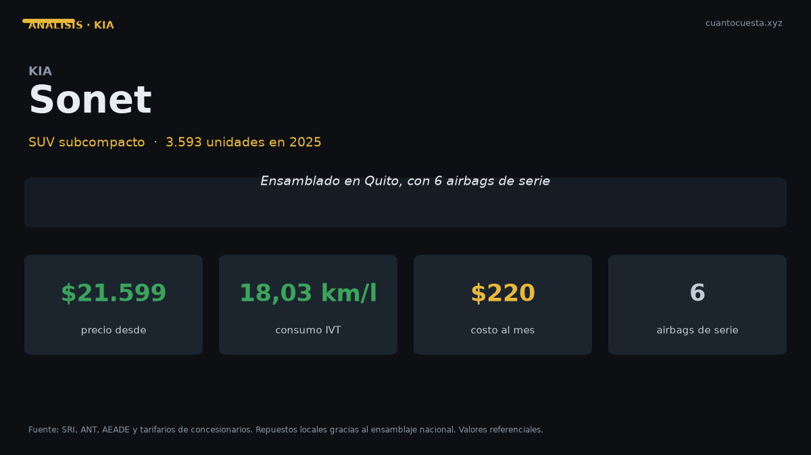

Kia Sonet en Ecuador: análisis completo, costos y veredicto
SUV subcompacto ensamblado en Quito: 3.593 unidades en 2025, 6 airbags de serie y hasta 18 km/l en IVT. Precio, costos anuales y veredicto claro.

El Kia Sonet es el SUV subcompacto que más argumentos técnicos da por su precio en Ecuador. Vendió 3.593 unidades en 2025, es el tercer modelo más vendido del primer semestre de 2026 y cuesta entre $21.599 y cerca de $25.000. Lo ensambla Aymesa en Quito.
Su dato más fuerte no es el precio: son los 6 airbags de serie en todas las versiones. En un segmento donde varios rivales ofrecen 4, eso lo coloca por delante en seguridad pasiva, sin pagar la versión tope.
En versión IVT el Sonet homologa 18,03 km/l combinado. A 12.000 km al año eso son $573 en combustible frente a $683 de la versión manual. La automática se paga sola en el uso diario.
Ficha técnica
| Dato | Kia Sonet |
|---|---|
| Motor | 1.5 L, 4 cilindros |
| Potencia | 113 hp a 6.300 rpm |
| Torque | 144 Nm |
| Transmisión | Manual o IVT (automática) |
| Consumo combinado | 15,14 km/l (manual) / 18,03 km/l (IVT) |
| Tanque | 45 litros |
| Maletero | 392 litros (VDA) |
| Largo | 4.110 mm |
| Ancho | 1.790 mm |
| Distancia entre ejes | 2.500 mm |
| Airbags | 6 de serie en todas las versiones |
| Pantalla | 9" (entrada) / 10,25" (X Line y GT Line) |
| Conectividad | Apple CarPlay y Android Auto inalámbrico |
| Garantía | 10 años o 160.000 km |
| Ensamblaje | Quito (Aymesa) |
Ese motor rinde más que el del Chevrolet Groove (98 hp) con un consumo combinado notablemente mejor. Con 4.110 mm de largo y 2.500 mm entre ejes, es un subcompacto: cabe en cualquier parqueadero de Quito y no sufre en los pasos a desnivel angostos.
El maletero de 392 litros es el punto débil: el Kia Soluto ofrece 475 litros por $5.000 menos. Si llevas carga grande seguido, el sedán gana.
Precio y versiones en Ecuador
| Versión | Precio de referencia |
|---|---|
| Entry | $21.599 |
| X Line / GT Line (tope) | cerca de $25.000 |
Los $3.400 de diferencia entre entrada y tope se pagan en pantalla de 10,25" en lugar de 9", acabados de la línea GT y equipamiento adicional. Los precios varían por agencia, ciudad y promoción.
Ventaja concreta del ensamblaje local: disponibilidad de repuestos y tiempos de entrega más cortos que un SUV importado completo. Cuando el carro se arma en Quito, la bodega nacional responde antes que un contenedor.
Cuánto cuesta mantenerlo
Escenario: 12.000 km al año, combustible Extra o Ecopaís a $3,21 el galón, precio entre $21.599 y $25.000.
| Rubro anual | Versión manual | Versión IVT |
|---|---|---|
| Combustible | $683 | $573 |
| Mantenimiento (aceite, filtros, alineación) | $400 – $600 | $400 – $600 |
| Matrícula y revisión técnica | ~$180 | ~$180 |
| Seguro (≈4% del valor) | $864 – $1.000 | $864 – $1.000 |
| Llantas (amortizadas a 40.000 km) | ~$150 | ~$150 |
| Lavado, imprevistos, multas | $100 – $200 | $100 – $200 |
| Total anual | $2.377 – $2.813 | $2.267 – $2.703 |
| Equivalente mensual | $198 – $234 | $189 – $225 |
El Sonet cuesta más al año que un sedán de $16.000 —el seguro por el mayor valor del vehículo explica gran parte— pero menos que la mayoría de SUV medianos. La IVT ahorra $110 al año en combustible, y algo más si manejas mucho en ciudad, donde el rango 15–18 km/l se aprecia frente a una manual mal aprovechada.
Cruce de verificación: el tarifario oficial de un concesionario Ford fija el costo de mantenimiento en $0,048 por kilómetro, que a 12.000 km son $576 al año. El rango $400–$600 es consistente con ese dato de referencia.
Precios unitarios de taller: aceite y filtro $50–$90 cada 5.000 km, alineación y balanceo $30–$50, filtro de aire $20–$40, filtro de combustible $30–$60, líquido de frenos $40–$70, bujías $50–$100, pastillas delanteras $80–$150, amortiguadores $200–$350, batería $100–$200, llanta $120–$250.
Con aceite sintético el intervalo recomendado es 10.000 a 15.000 km o 6 meses. En Quito y Guayaquil, con tránsito pesado, acórtalo: el mismo motor trabajando en hora pico degrada el aceite más rápido.
Equipamiento y seguridad
| Elemento | Kia Sonet |
|---|---|
| Airbags | 6 de serie en todas las versiones |
| Control de estabilidad | Sí |
| Frenos ABS | Sí |
| Estructura | Acero de ultra alta resistencia |
| Pantalla táctil | 9" (entrada) / 10,25" (X Line y GT Line) |
| Android Auto y Apple CarPlay | Inalámbrico |
| Garantía | 10 años o 160.000 km |
La garantía de 10 años o 160.000 km es el dato más subestimado de esta ficha. Si financiarás a 5 o 7 años, la cobertura alcanza a cubrir todo el plazo del crédito: un fallo de fábrica en el año seis no sale de tu bolsillo.
Y los 6 airbags de serie significan que no tienes que subir de versión para comprar seguridad pasiva. Ese es el punto donde el Sonet se separa de sus rivales de precio similar.
Para quién es y para quién no
Es para ti si:
- Buscas SUV nuevo con la mejor seguridad pasiva por el precio
- Manejas sobre todo ciudad y valoras 18 km/l en versión IVT
- Quieres garantía que cubra todo el crédito
- Te sirve tener repuestos rápidos por el ensamblaje en Quito
No es para ti si:
- Necesitas maletero grande: 392 litros es menos que un sedán de $15.799
- Llevas cinco adultos con frecuencia: 2.500 mm entre ejes es ajustado, sobre todo atrás
- Entras a lastre con frecuencia: el despeje de un SUV subcompacto no es el de una camioneta
- Tu presupuesto tope es $20.000
Comparación con su rival directo
| Modelo | Precio | Airbags | Dato clave |
|---|---|---|---|
| Kia Sonet | $21.599 – ~$25.000 | 6 de serie | 15,14 – 18,03 km/l combinado |
| Chevrolet Groove | $19.999 – $24.490 | 4 | $1.600 más barato, más lento y más sediento |
| Kia Seltos | No especificado | No especificado | Un escalón arriba en tamaño y precio |
El Groove arranca $1.600 por debajo del Sonet. A cambio, ofrece 98 hp contra 113 hp, 4 airbags contra 6, y no publica consumo homologado. Unos $1.600 de diferencia por 15 hp, 2 airbags adicionales y un consumo certificado es una cuenta que se defiende sola.
Si necesitas subir de tamaño, el Seltos es el paso siguiente dentro de la misma marca; si el presupuesto manda, el Groove.
Veredicto
El Kia Sonet es el SUV nuevo con mejor relación seguridad-precio de Ecuador. Seis airbags de serie, garantía de 10 años o 160.000 km, un consumo combinado de hasta 18,03 km/l y ensamblaje nacional.
Es un subcompacto: no esperes el espacio de un SUV mediano. Pero si tu recorrido es urbano con viajes de fin de semana, y quieres costos anuales entre $2.267 y $2.813 con todo incluido, es la opción más sólida de su rango.
Elige la IVT si haces mucha ciudad. Ahí el Sonet rinde mejor y se paga la automática con el combustible ahorrado.
Precios referenciales de lista a septiembre de 2026. Varían por agencia, versión y promoción. Los consumos son datos de ficha técnica; el consumo real depende de tráfico, carga y altitud. No constituye asesoría financiera.
Sigue leyendo
Chery Arrizo en Ecuador: análisis completo, costos y veredicto
Vendió 1.534 unidades en 2025 y Chery creció 50,1% en el primer semestre de 2026. Precio, repue
Chevrolet D-Max en Ecuador: análisis completo, costos y veredicto
Es la camioneta más vendida de Ecuador con 5.515 unidades en 2025. Precio, costo real de operac
Chevrolet Groove en Ecuador: análisis completo, costos y veredicto
El SUV más vendido de Ecuador: 4.063 unidades en 2025. Precio desde $19.999, cuota de $309 al m
GWM Poer en Ecuador: análisis completo, costos y veredicto
La camioneta ensamblada en Ambato que rompió el precio del 4x4: 4.092 unidades en 2025. Precio,
Hyundai Grand i10 en Ecuador: análisis completo, costos y veredicto
Segundo auto de pasajeros más vendido de Ecuador con 1.690 unidades en 2025. Precio desde $13.9
Cómo usamos estos datos
Las cifras de esta guía provienen de fuentes públicas oficiales y tarifarios de concesionarios publicados. Los valores son referenciales: tasas municipales, promociones y precios de repuestos varían. Verifica siempre en la entidad o concesionario antes de decidir.